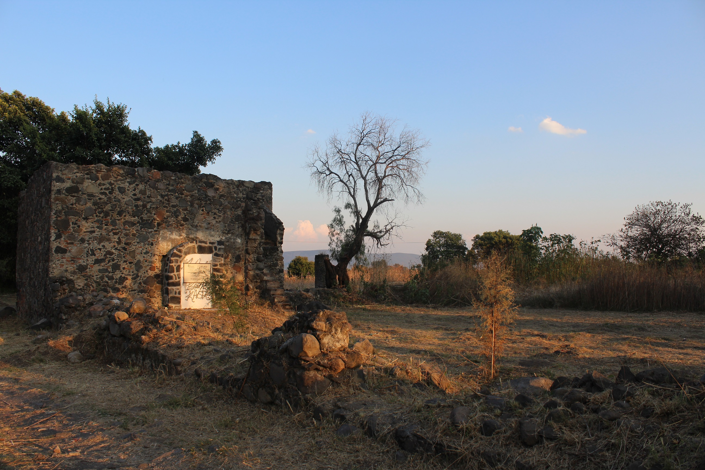

Batalla del 4 de Mayo de 1862
4 DE MAYO DE 1862
Atlixco tiene una larga historia de contribuciones a la construcción de éste país y este Estado de Puebla.
Desde la etapa de colonización hispana, fue un lugar privilegiado y codiciado. Sus condiciones de fertilidad, abundancia de agua y mano de obra, propiciaron una gran riqueza agrícola basada en el cultivo del trigo, por lo que fue considerada como “el primer granero de la Nueva España”. Su importancia económica ha sido plasmada en diversos testimonios de aquella época recogidos en el libro “Antigua Villa de Carrión”, de la autoría de Marco Díaz.
Su participación en la causa de la Independencia, -donde destacan José Luis Rodríguez de Alconedo y Francisco Pablo Vázquez- le otorgaron, de parte del General Nicolás Bravo en 1843 la denominación de “Noble y Leal Ciudad de Atlixco”.
El esfuerzo de construcción de nuestro país, pasa por una serie de invasiones. Por ello habrá que recordar también, la defensa que hizo Atlixco en contra de los españoles que intentaban reconquistar a México en 1825; y la intervención que tuvo en 1914 durante la invasión estadounidense en el gobierno de Victoriano Huerta.
La llegada de la industria textil en Atlixco implicó para la región un cambio favorecedor en el estilo de vida; sin embargo, ésta época de desarrollo textil en el valle de Atlixco coincide con el movimiento revolucionario. La influencia del movimiento de Emiliano Zapata en pro de de la tierra, sumó a un gran número de trabajadores inconformes y líderes de esta lucha revolucionaria de la región como Fortino Ayaquica y Domingo y Cirilo Arenas, que trataron de hacer insurrección en las fábricas textiles, hechos violentos que sucedieron entre 1911 y 1917 en la fábrica textil de Metepec. Incluso, el historiador Jeffrey Bortz, sostiene que los trabajadores de la industria textil del corredor fabril México, Tlaxcala y Atlixco, Puebla, aportaron las principales reivindicaciones laborales que quedaron plasmadas en la Constitución de 1917.
Una distinción que enorgullece a los atliscenses fue la Declaratoria mediante la cual Atlixco fue nombrada por Decreto del Congreso del Estado en el año de 1998 “Heroica Ciudad de Atlixco” por la defensa que dieron en contra del ejército norteamericano en 1848, y el reconocimiento al batallón “Libres de Atlixco” comandado por el general Joaquín Rea, que enfrentaron en un ataque desigual, contra de una población indefensa demostrando el gran valor de los atliscenses.

Nuevamente, un 4 de mayo de 1862, Atlixco, enfrenta una batalla en contra de conservadores que pretendían sumarse al Ejército Francés. Hecho decisivo en la epopeya del 5 de Mayo, que hoy es parte de la historia nacional.
El propio Benito Juárez creó una medalla reconociendo esta aportación de los atliscenses que señalaba: “Derrotando a los traidores el 4 de mayo, contribuyó eficazmente al triunfo alcanzado en Puebla en contra del Ejército Francés el 5 de mayo de 1862”
El propio gobierno de Benito Juárez consideró que sin el triunfo del 4 de mayo en Atlixco, no hubiera sido posible la victoria del 5 de mayo en Puebla.
Justamente ello fue el sustento para que en el año 2010: Del Bicentenario y Centenario de nuestros movimientos fundacionales, por unanimidad de votos, el Congreso del Estado aprobara el Decreto en el que se declara “Dos Veces Heroica la Ciudad de Atlixco”
La aportación de Atlixco y la región al movimiento de Independencia está plasmada en la obra de la historiadora Alicia Tecuanhuey, “La formación del consenso por la Independencia. Lógica de la Ruptura del Juramento. Puebla, 1810-1821”
Por ello importante hacer una recordación de estos hechos, en el contexto de los eventos conmemorativos al 4 y al 5 de Mayo celebrados en Atlixco y en la ciudad de Puebla, éstos últimos con la presencia del Presidente de México Enrique Peña Nieto. Primero, porque para Atlixco es un gran orgullo y también, porque representa sin duda, la aportación histórica, cultural y social que Atlixco ha dado a Puebla y al país y que servirá a las y los jóvenes de hoy, y a las futuras generaciones, para rescatar su interés por la historia y fundamentalmente el sentido de identidad y pertenencia a esta noble tierra: Atlixco


 1
1 2
2 3
3 4
4 5
5 6
6 7
7 8
8